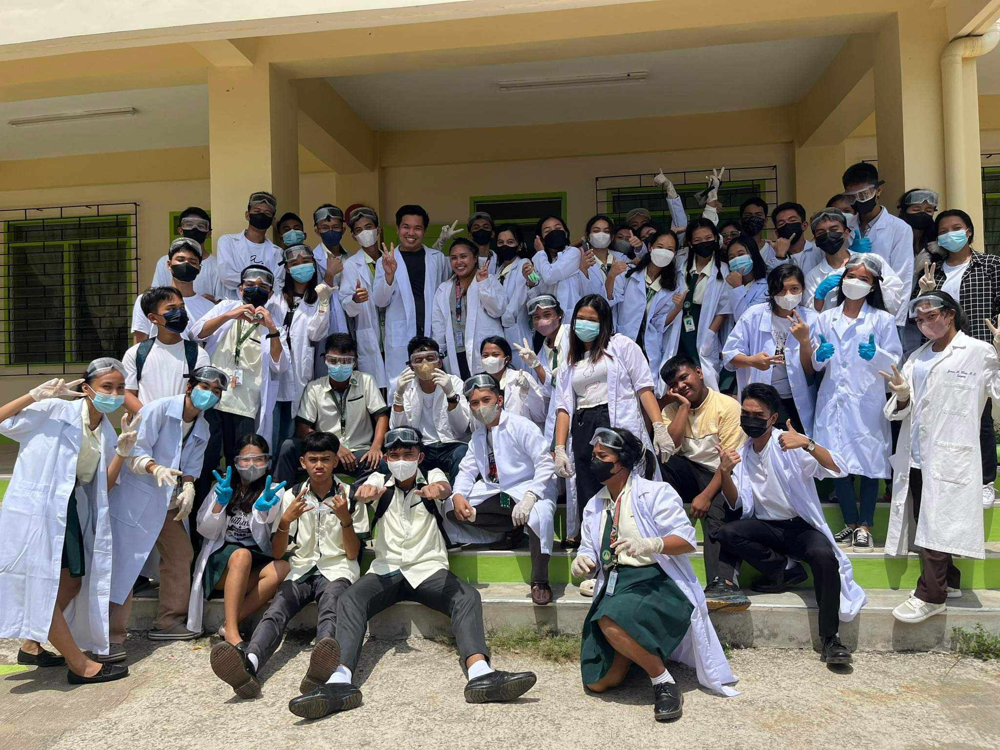
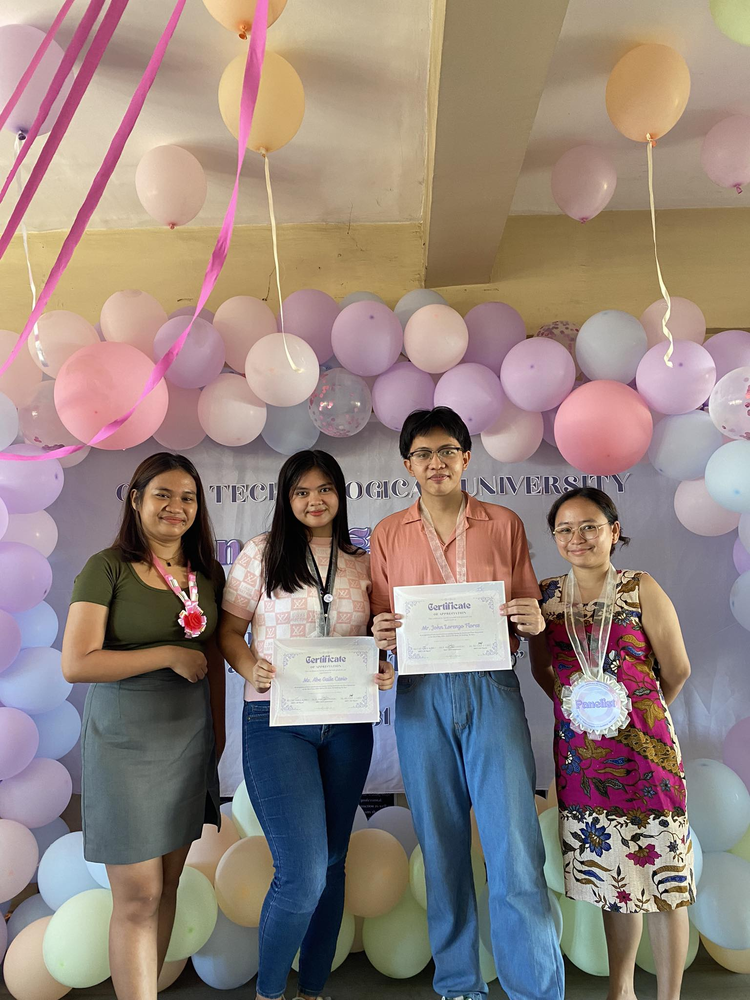

03
My Education
I'm John Lorenzo Flores,
a second-year Bachelor of Science in Information Technology student at Cebu Technological University - Main Campus (CTU-MC).
My academic journey has been shaped by the mentorship of outstanding educators and hands-on projects that fuel my passion for science and technology.

I graduated from San Jose National High School, where I was an honor student and served as an officer in the Youth for Environment School Organization (YES-O). This experience sparked my commitment to environmental awareness, which continues to influence my goals in IT today.

During high school, I also had the chance to dive into scientific research through a project titled "Effectiveness of Ixora Chinensis Cellulose in Developing Biodegradable Plastic." Working on this project gave me a deeper understanding of sustainable practices, as we explored innovative ways to develop eco-friendly alternatives to traditional plastics. Alongside this research, I developed my laboratory skills through tasks like specimen dissection, which fueled my curiosity in the sciences.

At CTU-MC, I’ve continued challenging myself. In my first year, I took on a personal milestone when my classmates chose me to be a speaker at a symposium focused on gender and peace. Delivering an educational speech in front of an audience helped me build confidence in public speaking and deepened my awareness of social issues related to technology.
I’m excited to keep expanding my knowledge and hope to combine my technical skills with my environmental awareness to make a meaningful impact in the field of information technology.
My Skills!